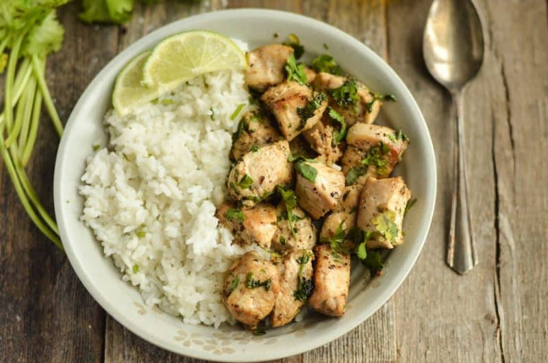

Cilantro Lime Chicken and Rice

Description
This recipe is one that my wife and I make super often on weeknights because of how easy of
a meal it is. It doesn't make too much of a mess and is a great healthy meal for losing weight,
or as a comfort meal because of how delicious it is!
For the chicken
For the sauce
- 2 ripe avocados
- 1 bundle of cilantro
- 1tbsp. salt
- 1/2tbsp. pepper
- garlic powder to taste
- 1/2 cup of sour cream (sub greek yogurt to keep it healthy!)
- 1/2tbsp. cumin
- 1/2 cups of water
For the Rice
- 1 1/2 cups Rice
- 3 cups chicken broth
Lets get cooking!
- On the back left burner, take a medium sized pot and add your 1.5 cups of rice(I always rinse mine before I cook it)
- Add in your chicken broth and bring to a simmer, then put a lid on the pot and let cook for about 10 minutes.
- On your stove, set the front right (the one you should always be cooking with anyways, duh!) on medium-high heat. Pre-heat
a pan while we prep our chicken.
- Next, we'll take our thawed chicken out of the package. Place it on a cutting board, pan, etc and pat dry with a paper towel.
Lightly coat all around with olive oil and add your seasonings. Don't be scared to make sure it's coated well.
- After we've seasoned our chicken, we'll want to add some olive oil to our pan. Add just enough so that the bottom of the pan is
coated. Toss the chicken into the pan and let cook for about 5 minutes a side, or until a nice crust has formed on the bottom. Flip
your chicken as needed until cooked to an internal temp of 165 degrees fahrenheit, then set aside. Turn your heat down to low when
you remove the chicken.
- Now we'll start on our sauce. In a blender, add the 2 avocados, sour cream, and seasoning, along with about a quarter cup of
water.
- Add the lid to the blender and blend until smooth. You don't want any avocado chunks in your sauce.
- Back on the cutting board, dice your chicken to your desired cubes.
- Add your chicken back to the pan while the heat is on low, then pour your sauce from the blender in with it.
- Let this simmer for about five minutes on low while stirring every once in a while. We want to get the seasoning cooked
into the pan off of it and incorporated into the sauce.
- Once your chicken is done simmering, grab a bowl and scoop some rice into it. Then, add your cilantro-lime chicken with sauce
and enjoy!